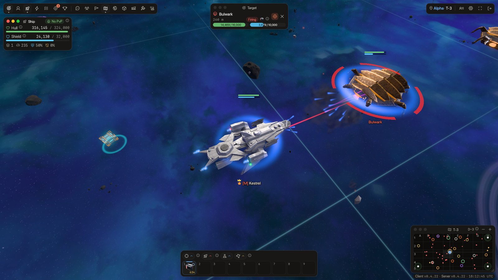
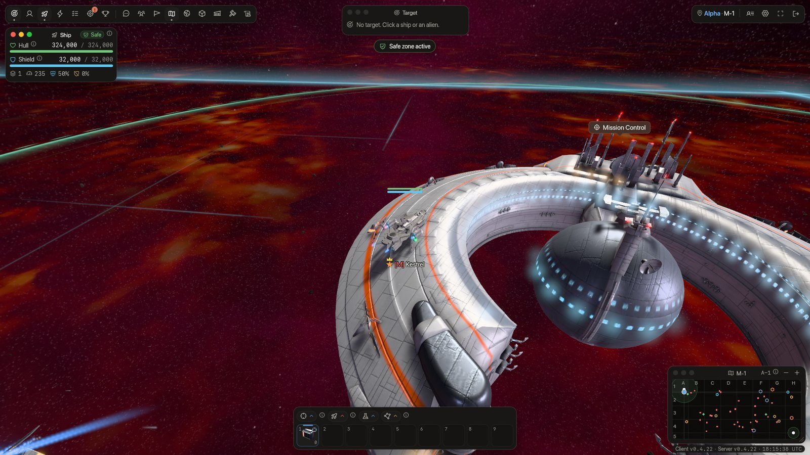
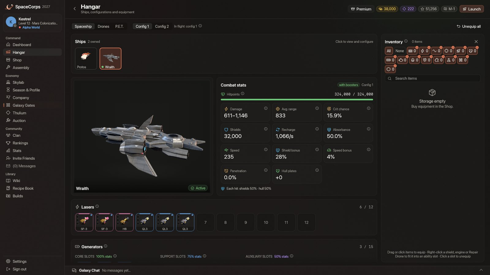
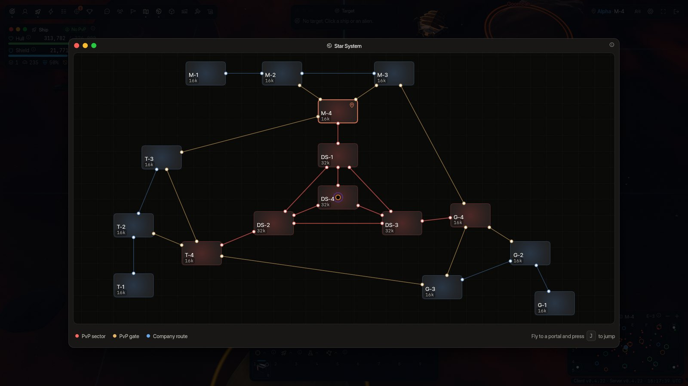

SpaceCorps 2027 is out: a free space MMO built on our own engine
Fly for one of three companies, hunt aliens, fight rival pilots across 16 sectors, build up your ships and your base, and try to get through the wipe that ends every 30-day season. It is free, it runs on macOS, Windows and Linux, and the servers are live now.
What you do
- Fly and fight: click to fly, click to target, press A to fire. Four hulls, from the starter Protos to the 324,000-hitpoint Wraith, with lasers, drones and abilities.
- Pick a side: Mars, Terra or Galactic each hold four home sectors; four PvP sectors lie between them. A tier choice decides where you can be attacked.
- Build and craft: hangar, shop, assembly with enchants and fusion, and the Skylab, an orbital base that produces while you are offline.
- Team up: clans with ranks, a shared bank, alliances and wars; company squads patrol the home sectors.
- Seasons: 30 days each, opening with three days of peace. At the wipe your active ship and everything fitted on it carry over.




Built on Space3d
SpaceCorps 2027 is a native game on Space3d, our Rust engine, with an authoritative Rust server. It replaces the original React, three.js and Electron client. HDR graphics, bloom and GPU particles come from the engine; the game downloaded from our site updates itself, and only updates signed by SpaceCorps are installed.
Play
- Download: spacecorps.github.io/play (macOS 12+, Windows 10/11, Linux x86_64 with Vulkan).
- Community: Discord.
- Languages: 13, including English, German, French, Spanish, Japanese, Korean and Simplified Chinese.
Early days. The player base is small and we ship updates constantly (v0.4.22 went out on 15 October). Some translations have had no native review yet. Tell us what is broken.